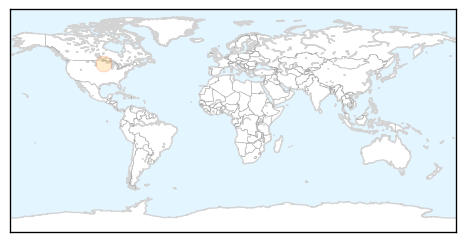
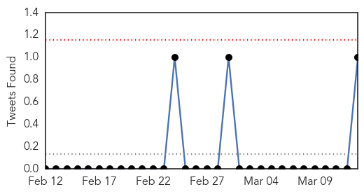
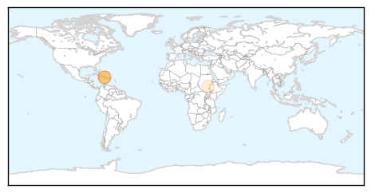
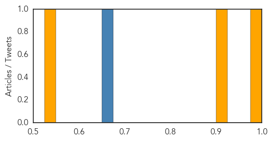

Mold/Fungal
30-Day Web Trend
0 alerts, 0 warnings
30-Day Twitter Trend
0 alerts, 0 warnings

Article Locations
Article Confidences

Top Articles:
Top Tweets:
-
No tweets found for Mar 13, 2014
Cholera
30-Day Web Trend
3 alerts, 3 warnings
30-Day Twitter Trend
1 alerts, 0 warnings

Article Locations
Article Confidences
Top Articles:
Top Tweets:
- 0.833
- Increasing trend of cholera outbreak in Katanga 1,173 cases w 34 deaths - 24 of 68 health zones through 16 Feb 2014 http://t.co/awkIIu8QT8